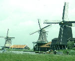

呂清夫 撰文

有人說，巴黎也色情，然而為何不會艷名遠播？這逍因為巴黎的文化氣息蓋過了一切。阿姆斯特丹也有類似的現象，在我們的印象中，這是一個鮮花加上腳踏車的城市，近日的「梵谷誕生一百周年紀念」活動更增添了濃厚的文化氣息。然究其實，阿姆斯特丹也有黑暗的一面，一個荷蘭人告訴我，他們為了健康、清潔、方便，大家愛騎腳踏車，但是人們在買腳踏車之前，常要先買一副堅固的鎖才行，因為偷車的風氣十分惡劣，朝買夕丟的大有人在，他們的跳蚤市場正是買回自己腳踏車的「賊仔市」。 阿姆斯特丹市警局更印行了一種圖文並茂的傳單，給觀光客一個見面禮，一則表示歡迎，一則諄諄告誡外賓：請您時時記住，財不露白，請鎖好您的車子，莫將貴重物品留在車上，如再發生意外，請電二二二二二二號電話云云。可知事態之嚴重，但是他們也不諱疾忌醫，乾脆實話實說。阿姆斯特丹的市區大概和台北差不多，甚至更小，然卻擁有一個氣象萬千的「紅燈區」，其範圍之大，人氣之盛殆非台北寶斗里或江山樓可以望其項背。它如同世界各地的紅燈區一樣，蔓延在一條運河的兩岸，早年應是「行船人」的溫柔鄉，但因距離王宮很近，走路不過十來分鐘，因之，與舊王宮同為觀光之地。觀光客通常結隊而去，而且男女同行，以防各種意外。紅燈區的最大特色是它的「櫥窗女郎」，那如同餐廳門口的「樣本菜」或建築工地的「樣品屋」，只是「櫥窗女郎」擺的是真人，在鮮紅燈光的櫥窗之中出現的是燕瘦環肥的三點式美女，背景襯以各色寢具，引發行人的慾望。「櫥窗」的左鄰右舍在販賣成人玩具或色情書刊，兩岸的樹上綴滿紅色小燈，噴水池湧出的都是泡沫……整個紅燈區恐怕走一個晚上也逛不完，可知其占地之廣，聲勢之大。但其艷名遠不如泰國的同類「櫥窗」，在國內亦很少人提及阿姆斯特丹的艷名。其所以如此，應該多少與巴黎一樣，是由文化氣息掩蓋了一切。首先，荷蘭人愛種花、會種花，是花的輸出國，美麗了自己，也取悅了別人。阿姆斯特丹的鮮花拍賣市場居然成了一國際觀光的據點，當地的「小人國」則完全被美麗的花圃掩去了光彩。其次，阿姆斯特丹的古厝保存得很好，在市區的運河上搭乘觀光玻璃船，可以讓你飽覽兩岸的荷蘭古厝達一個小時以上，其中包括十七世紀荷蘭大畫家林布蘭的老家都完好的立在河邊，因之，不得不使人感到這是一個重視文化傳承的城市。但是這個城市的文化重心當在於皇家美術館，它和我們的「故宮」最大的不同是，收藏並不完全基於「帝王的觀點」，它的收藏起先雖以皇家為主，但是後來便吸收了很多來自民間的捐獻，特別是來自荷蘭發達甚早的商業公會，追一類作品充滿平民趣味，題材並無王公貴族武將之類，而是一些小市民的日常生活，如廚房的一角、鄉親的跳舞、警員的出巡、公會理事的「合照」等是，要之，俱為西方藝術史上最早最重要的平民繪畫，足以吸引民眾近悅遠來。而最能提升國際視聽的是，他們最近炒起了「梵谷熱」，因為適逢梵谷誕生一百周年，而阿姆斯特丹的梵谷美術館又收藏有全世界最多的梵谷畫作，因之，在市政府大力豉吹之下，世界的梵谷迷莫不迢迢千里而來，弄得門票一票難求，團體票固然要預約，個人票也最少要在三天前才能買到，而即使有票在手，亦得準時入場，限時出場！因為觀眾是如潮水般一波波地湧來。不僅如此，荷蘭航空亦在全球推出「藝術之旅」，梵谷的作品更被複製於洋酒、香水、T恤、手錶、絲巾、領帶……，賣場更從皇家美術館後面到機場免稅店都可以看到，真是漪歟盛哉。這一切的一切使得阿姆斯特丹瑕不掩瑜，雖然春城無處不飛花，但是這個花卻讓國際人士想到了鮮花與藝術，手法確實高明。只不知一直要把色情趕走的台北市能否注意到這個他山之石。
原載1990.8.5.自立早報，收入1994呂清夫著「現代都市叢林派」